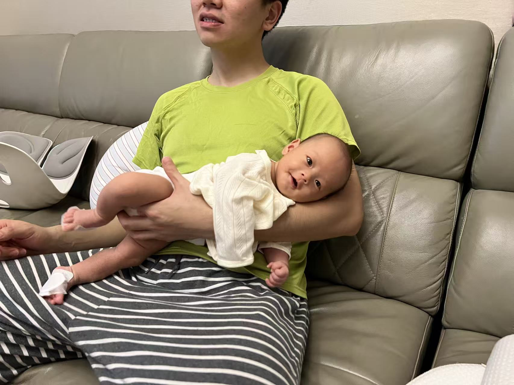
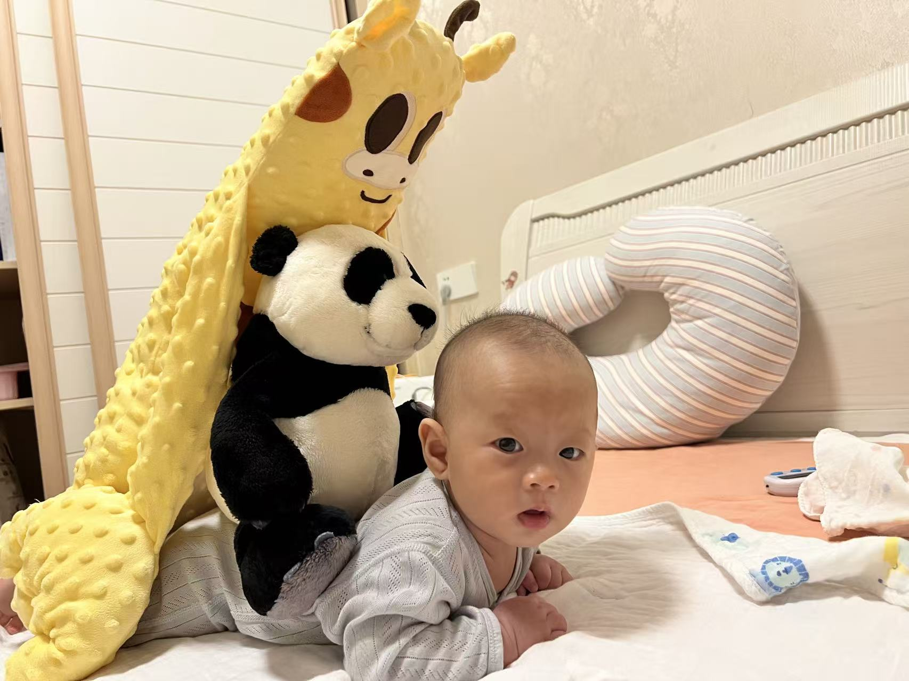
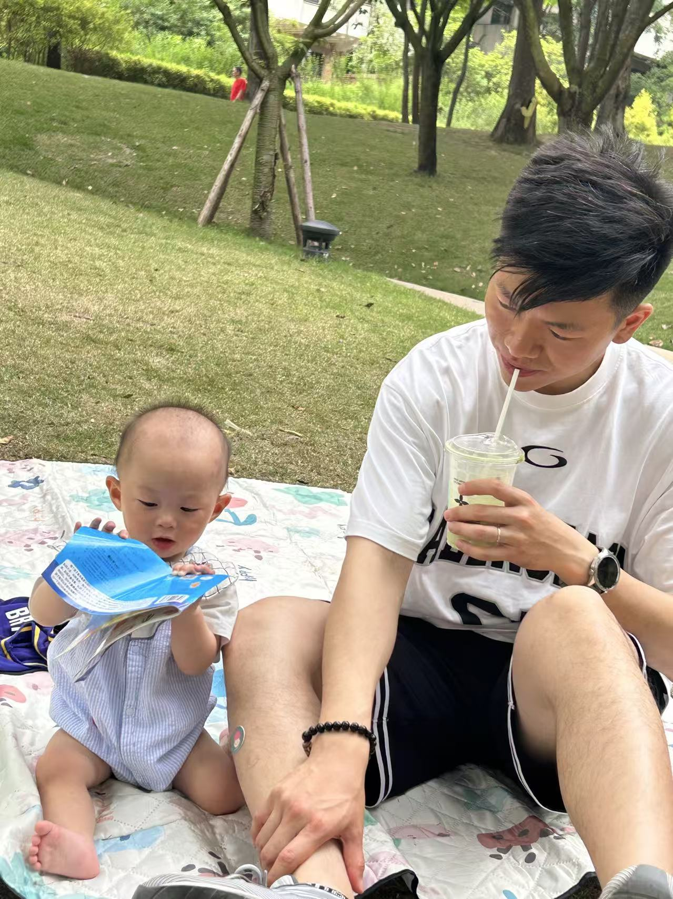
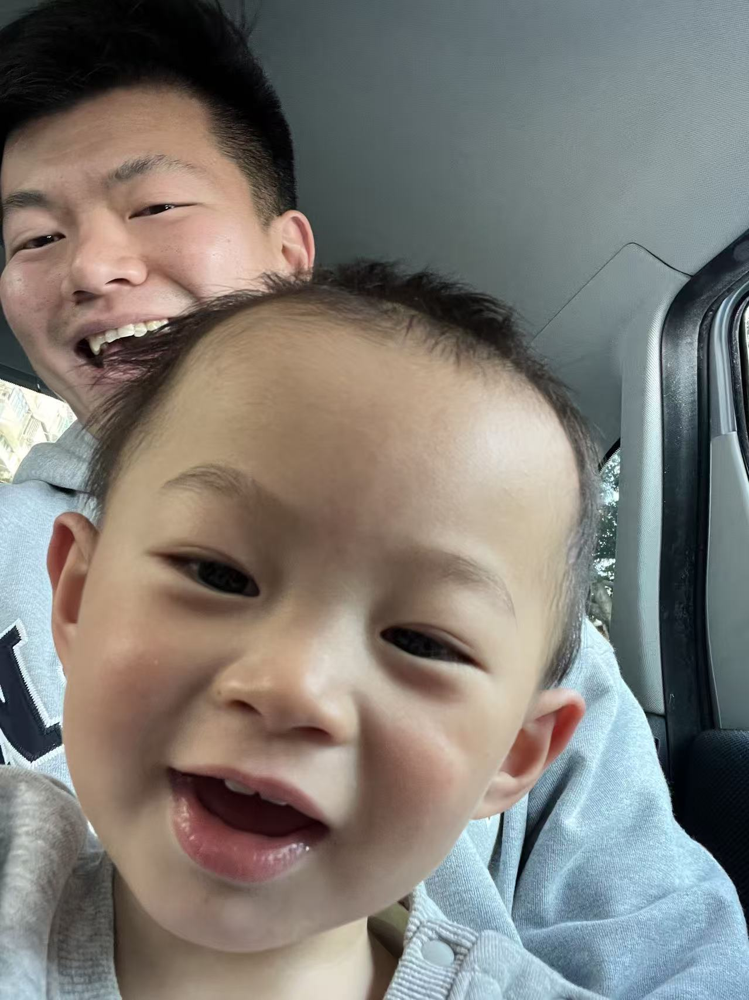
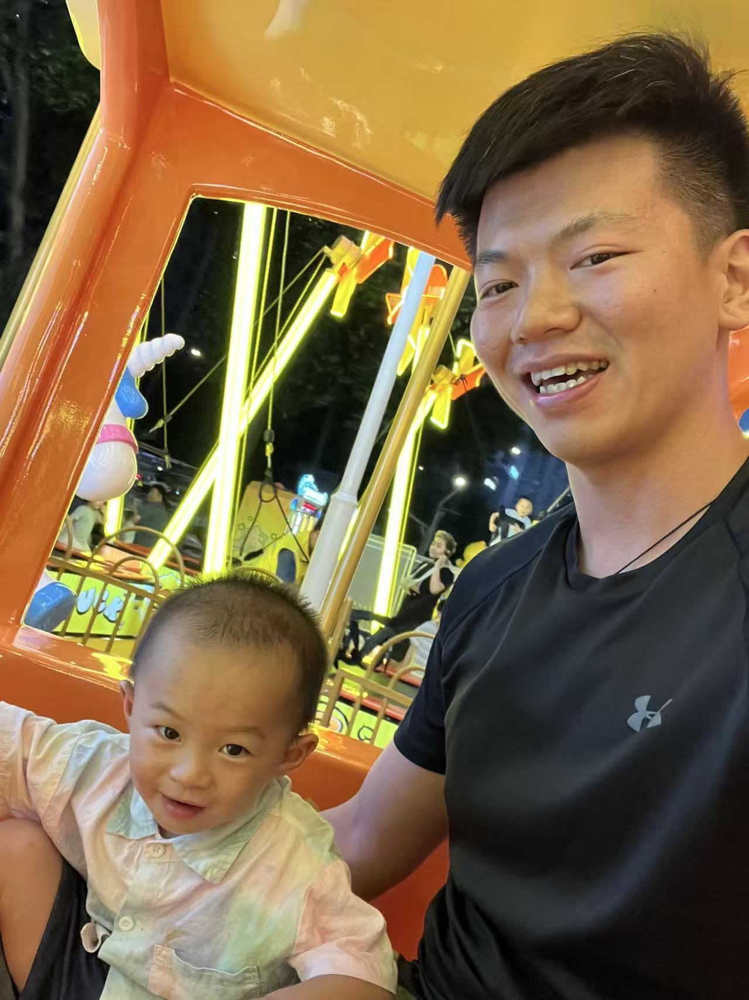

索尼創始人井深大曾經說過「3 歲定終身」。或許是這句話，讓目前 32 歲的我，決定身為一位父親，更要好好陪伴大強（2歲的兒子）的幼年成長，希望他成為一個情感豐富、體善人心的人。
 |
||
| （圖 1：大強 3 個月，喝完奶正在排嗝） |
身邊的朋友提到，當爸爸碰上兒子，就是給爸爸一個機會再次體驗童年。陪著小孩一起玩溜滑梯、一起搗亂、一起打滾，甚至還能補足爸爸曾經缺失的童年時光。目前經歷兩年了，我想說，真的是如此！心中激起更多的期待，期待以後能一起打電動、一起談天說地、一起暢飲。
 |
||
| （圖 2：大強 5 個月，揹著他的夥伴們練習抬頭） |
老大照書養，這句話真沒說錯，對一個毫無經驗的爸爸而言更是如此。自從大強出生以前，我開始閱讀了幾本育兒書，到最近研究兒童心理學和內向心理學的過程中，體認對待小孩和大人的方式，沒有太大的區別。如果把他當作大人對待，會發現小孩成長的速度特別快，也讓大人們更省心。這也許就是成長教育的真諦，也是讓他自我發展個人特色的良好方法。
 |
||
| （圖 3：大強 8 個月，一家人外出野餐擺弄自己的貼紙書） |
雖說現今社會不斷提倡男女平等，而細細體驗爸爸帶小孩的過程中，因為生理生育的關係，一般女性更佔有話語權。身為父親的我，也因此經常被數落說「男的不懂」、「男的怎麼可能會做」這類型的打擊。之前也曾因拍嗝動作太用力、排氣操沒達到效果，被家人們數落到自我懷疑，懷疑自己是否沒資格、沒能力照顧小孩而差點放棄。
 |
||
| （圖 4：大強 1 歲 5 個月，坐車時充滿鏡頭感的自拍照） |
回想起來，好在我沒放棄，主要原因是我不希望媽媽一人承擔這麼多勞心勞累的照顧工作，心中信仰更是主打「Happy Wife, Happy Life」。經歷 2 年到如今，開始得到其他家庭成員的稱讚，甚至還會模仿我的處理方法，我因此感到非常有成就感，也慶幸自己當時沒有放棄。現在獨自帶大強出門玩耍、換尿布、吃飯、和大強一起雞同鴨講，都是我很擅長且熱愛的家庭生活。每當當下疲倦時，我總會告訴自己，自己正在對家庭和樂發展，做出非常偉大的貢獻，因為這一輩子，我們永遠都會是一家人。
 |
||
| （圖5：大強 2 歲，晚餐後不肯離開樂園的小火車） |